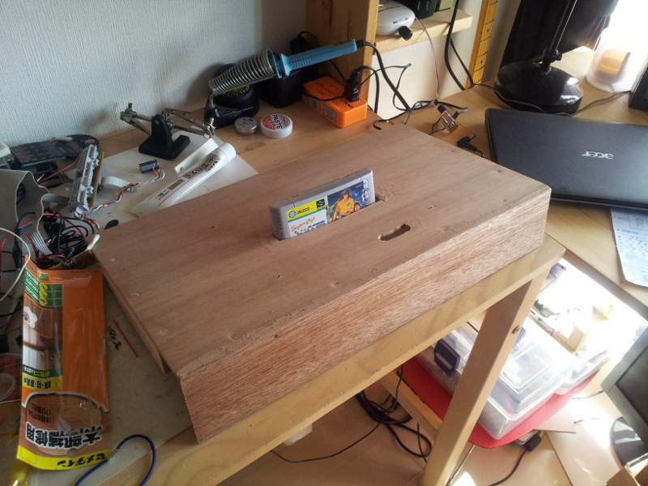
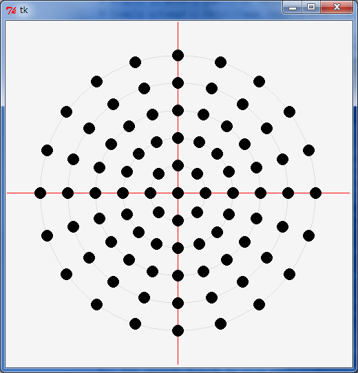
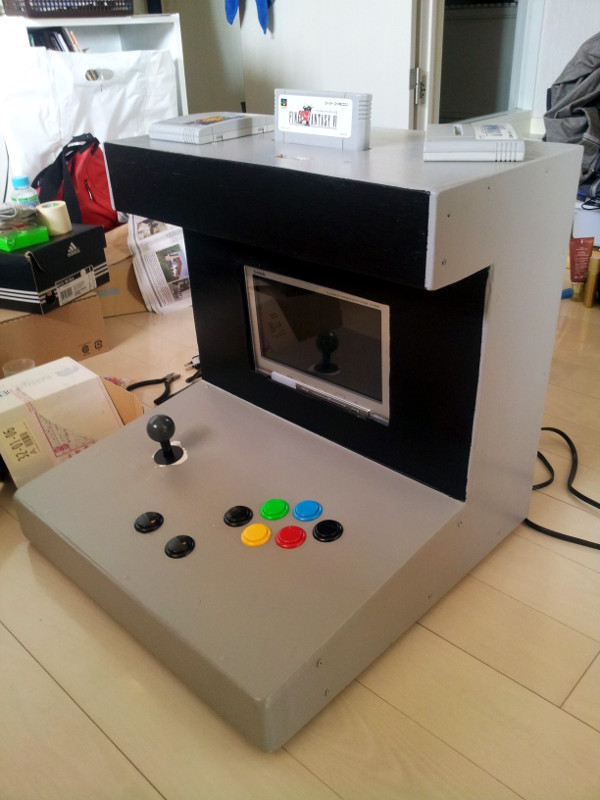

All the technical details are on the less glamorous page Around a SNES.
- 7 pieces of 45x45x0.5 cm of plywood (contreplaque in French) : 7x 230 JPY
- 3 pieces of 3x2.5x200 cm of cleat (tasseau in French) 3 x 420 JPY
- some putty (mastic) 1x 440 JPY
- sand paper set 2x 100 JPY
- paint
- jigsaw,
- hammer,
- sweat, imagination and a few spare hours.
|  |
The top part, with a hole for the cartridge and one for the 2nd player controller |
|  |
Speaker hole pattern. There is a python script to make it on the main page . |
| Buttons with a custom layout by my local video game pro. The holes are irregular for the tool I had made little too small holes, si I had to dremel it bigger and of course, fix my mistakes with putty (the brown stuff) |
|
| The sound board. basically a NJM2013D double amp and 2x 9cm 4ohm speaker scavenged in a radiocassette ... yeah, found in the garbage. |
|
 |
The sound circuit zoomed and the diagram by hand. |
| Fully assembled (except back panel), applying mastic, sand paper, mastic, sandpaper, ... |
|
| Back view with the horizontal bar that will block the screen of falling in the back. Also notice the small stands to level the screen to the opening. |
|
| Painting, round 1. 3/4 white acrylic paint, 1/4 water. Before sanding. |
|
| After painting light grey and black for the front part, 3 layers of paint (grey, %20 2 for black) and sanding between each session, before the nice mate finish. |
|
| First assembly tests, everything falls in nicely. Buttons are not wired but it startups nicely and sounds works just fine. |
|
|  |
With the buttons, after the varnish (mate). Not bad, that's the final appearance. |
| The assembled, painted and working version! |
|
| Tadaaaa♪ |